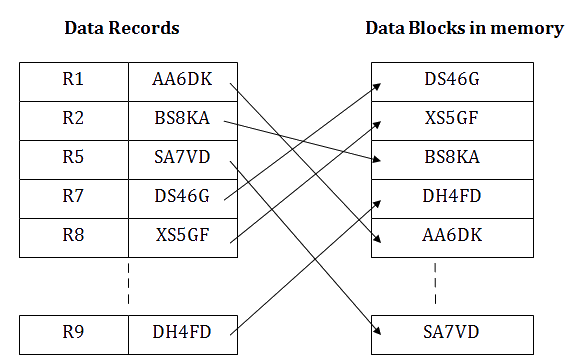

A management information system provides summary information to managers to enable them to make decisions. The MIS will collate data
from a database and present it in the form of reports and charts. The reports and charts are created by people, but once they are created
they can be reused as the data changes within the data sources.
Testing data
Types of test data
Type
Output
Normal
Data should pass the validation rule
Abnormal
Data should generate error message
Extreme
Data will pass only because its on the boundary. For ex Range of 10-20 and data being 10
Advantages disadvantages of simulation
Advantages include:
expensive prototypes or the real thing do not need to be created in order to
experiment with different variations and answer what-if question
changes can be made very quickly to the model and the effect can be seen just as quickly
Other designs and alternative models can be used to see how they react differently
unusual events (for example, earthquakes) can be tested without the need to wait for them to happen in real life
equipment does not suffer from wear and tear or damage when being tested or experimented with
dangerous situations such as aeroplane equipment failure can be simulated without putting people in danger
simulations can be ‘sped up’ so that effects can be analysed over a long period of time without having to wait
for that period of time to elapse.
Disadvantages include:
the way a simulation reacts is only as good as the model it is based upon
simulation software and equipment can be very expensive to purchase
people need to be trained to use simulation equipment and software
complex models take many years to develop, especially if th ey are designed to react like the real process
it is impossible for a simulation to be a perfect representation of the real-world process.
Advantages and disadvantages of normalisation
Advantages
Normalisation removes duplicate data from a database. Not only does this reduce the size of the database,
it also removes the potential for errors and inconsistencies
The database becomes more flexible in that it is easy to add new fields to tables without affecting other columns
Having smaller tables also means that data can fit onto one screen or one page more easily because there are fewer fields
and security permissions can be applied to individual tables
Disadvantages
Data that is duplicated may be edited for one record but not another, meaning that it becomes inconsistent.
Lookup takes time to perform and will use up processor time, which means that some queries that require access to more
than one table may be slow.
Normalizing data is not an easy task and requires a database designer. An average user cannot do this
File access types
Indexed sequential access

Imagine reading a book, if you need something specific, you can quickly look it up in the index. The index tells you where to find
the information, so you don't have to read the entire book.
So, in Indexed Sequential Access, you can go through data in order (sequential) or jump to specific parts using an index,
making it efficient for finding things in a large set of information.
The index is small enough to store in main memory and so all that needs to be done to find a record is to search the index,
find the location in storage and then read the records from that point until the record is found.
Direct file access
The use of indexed sequential file access still requires some serial access of data and there are problems with trying to maintain
a file in a sequential order as new records are added and old records deleted. In direct access, data is stored in a way
that allows direct retrieval without the need to go through the data sequentially. This is achieved through methods like hashing
or maintaining an organized structure that allows rapid access based on a unique identifier or address.